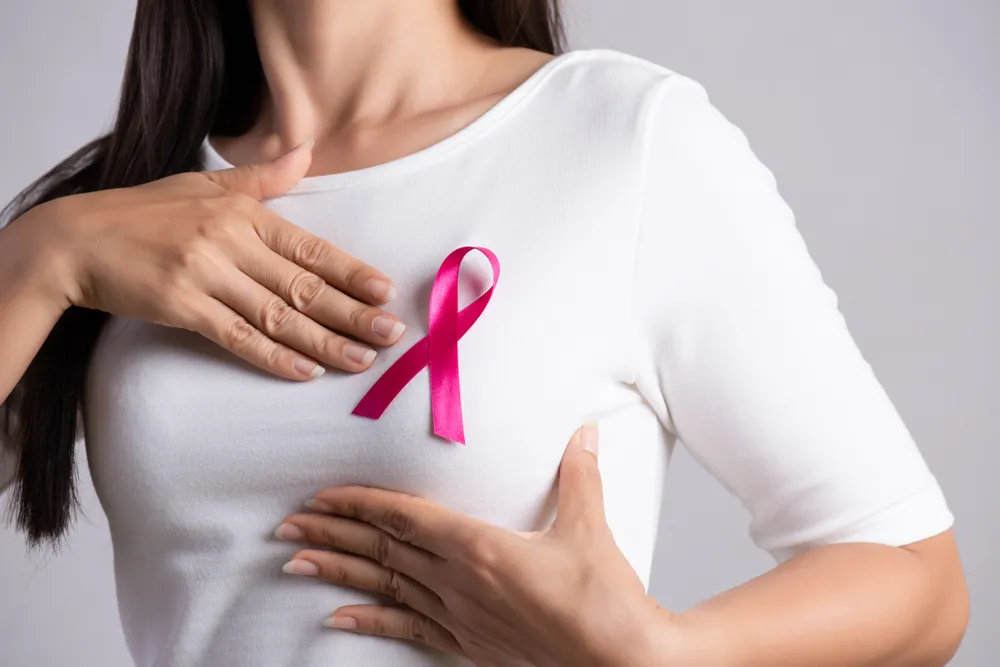

Risk Factors for Breast Cancer

Breast cancer is one of the most common cancers in American women, aside from skin cancer. The average risk of a woman in the United States developing breast cancer at some point is about 13-percent, says the American Cancer Society . For the most part, the risks of breast cancer are outside a person’s control, but there are a few lifestyle choices that may make a difference.
Having one of the following risk factors does not mean you will get breast cancer. Sometimes cancer develops in women without any of these risk factors. According to the Centers for Disease Control and Prevention (CDC) , most women have a number of these risk factors and do not get breast cancer. However, if you have some, it might be worth talking to your doctor about how to decrease risk and when to get a screening test.
Here’s a look at the most common risk factors for breast cancer…
Age and Race
Aside from being female, the second biggest risk factor for breast cancer is advancing age. Plain and simple, your risk of breast cancer increases with age, says the Mayo Clinic . Most breast cancers are diagnosed in women over the age of 50 . According to BreastCancer.org , women between the age of 30 and 39 have a risk of about 1 in 228 or .44-percent. Their risk jumps to 1 in 29 or just under 3.5-percent by the time they are in their 60s.
Race can also play a role in a woman’s risk. “White women are slightly more likely to develop breast cancer than are Black women,” says BreastCancer.org. Overall, Asian, Hispanic, and Native American women have a lower risk of dying from breast cancer.
Genetic Mutations
Certain genetic mutations passed from parent to child can increase risk of breast cancer. The most common gene mutations are breast cancer gene 1 (BRCA1) and breast cancer gene 2 (BRCA2). Doctors estimate these genetic mutations are responsible for about 5 to 10-percent of all cases passed through family generations, says the Mayo Clinic.
While these gene mutations greatly increase a person’s risk for both breast and ovarian cancer, carrying either one does not mean your chance of developing cancer is inevitable. However, if you have a family history of breast cancer or any other cancer, your doctor will likely recommend you have a blood test to identify any gene mutations that may be continuously passed down. This information will help to decide the best screening plan for you.
Reproductive History
Unfortunately, women who have never been pregnant have a higher risk of developing breast cancer than women who’ve had one or two pregnancies. Also, women who gave birth to their first child after 30 are also at an increased risk. This also goes for women who didn’t breastfeed or who’ve never had a full-term pregnancy.
In addition to childbirth, the CDC explains that girls who experience an early menstrual period (prior to age 12) and women who start menopause after the age of 55 are at an increased risk. This is because of longer hormone exposure.
Dense Breasts
Breasts are made up of fatty tissue, fibrous tissue, and glandular tissue. Dense breasts mean there is more connective tissue than fatty tissue, explains the CDC. This can make it harder to see tumors on a mammogram.
“Women with dense breasts on mammogram have a risk of breast cancer that is about 1 1/2 to 2 times that of women with average breast density,” writes the American Cancer Society . Breast density can be affected by age, menopausal status, pregnancy, genetics, and the use of certain drugs (menopausal hormone therapy).
Personal and Family History
Similar to many other health conditions, family and personal history plays a large role when it comes to risk. If a first-degree relative such as your mother, sister, or daughter (or first-degree male relative) had breast cancer, this can increase your risk. Risk also increases if there are multiple people on either the mother or father’s side who have been diagnosed with breast cancer. It is important to note that most people diagnosed with breast cancer have no family history of this disease, says the Mayo Clinic.
When it comes to personal history, if a person had cancer in one breast, they’re more likely to have it in the other breast. If you’ve been diagnosed with breast cancer once, you’re more likely to get it a second time, says the CDC. “Some non-cancerous breast diseases such as atypical hyperplasia or lobular carcinoma in situ are associated with a higher risk of getting breast cancer.”
Radiation Therapy
A woman who was exposed to radiation therapy either as a child or young adult also has an increased risk of developing breast cancer. The CDC explains that this risk is specifically for women who’ve had radiation therapy to their chest or breasts. This is common when treating non-Hodgkin or Hodgkin’s lymphoma. The level of risk associated with radiation therapy greatly revolves around the age during which they received this treatment.
The younger they were, the higher their risk. The highest level of risk is as a teen or young adult when the breasts are still developing, says the American Cancer Society. “Radiation treatment in older women (after about age 40 to 45) does not seem to increase breast cancer risk.”
Certain Medication
Women taking postmenopausal hormone therapy medications combining estrogen and progesterone have an increased risk of breast cancer, says the Mayo Clinic. This medication treats the signs and symptoms of menopause.
It’s important to note that their risk does go back down when she stops taking the medication. The CDC adds that risk increases when medication is taken for more than five years. “Certain oral contraceptives (birth control pills) have also been found to raise breast cancer risk,” writes the source.
Weight
Being obese greatly increases a person’s risk of breast cancer, as well as women who are not physically active. The National Breast Cancer Foundation points out that this risk is increased when the overweight or obese person has already gone through menopause.
Before a woman goes through menopause her ovaries make estrogen and fat tissue produces a small portion. After menopause, the ovaries stop making estrogen and most of a woman’s estrogen comes from her fat tissue. “Having more fat tissue after menopause can raise estrogen levels and increase your chances of getting breast cancer,” says the American Cancer Society.
A poor diet can also play a role. “A diet high in saturated fat and lacking fruits and vegetables can increase your risk for breast cancer,” writes the National Breast Cancer Foundation. As well as a lifestyle with little physical activity. It’s not clear how physical activity reduces the risk of breast cancer, but it’s likely due to its effects on weight, inflammation, and hormone production.
Drinking Alcohol
Drinking alcohol can increase a person’s risk of breast cancer. The National Breast Cancer Foundation writes on their website, “frequent consumption of alcohol can increase your risk of breast cancer. The more alcohol you consume, the greater the risk.”
This doesn’t mean women can’t drink alcohol, but rather be more mindful of how much alcohol they consume. According to the American Cancer Society, women who have 1 alcoholic drink per day have a slightly higher risk of developing breast cancer than non-drinkers. This risk increases the more they drink. For example, women who have 2 to 3 drinks a day have a 20-percent higher risk than non-drinkers.
Source: https://activebeat.com/your-health/women/risk-factors-for-breast-cancer/